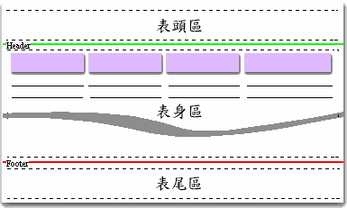
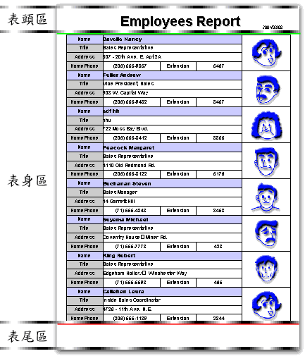
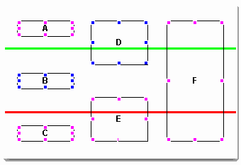
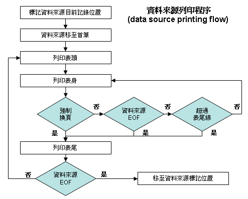
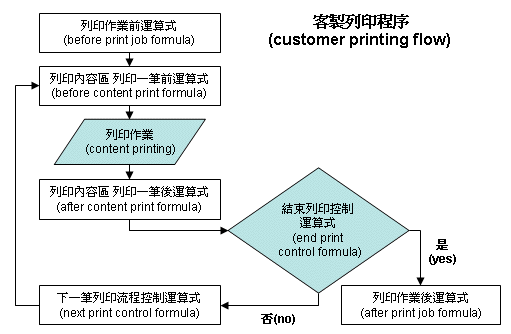

|

|
 |
Chapter 7
Report system |
 |
7. 報表 (report system)
列印流程機制
(printing flow and
mechanical)
資料來源列印程序 (datasource printing flow)
客製列印程序
(customer printing flow)
新增報表 (create new report)
報表管理 (report arrangement)
報表屬性 (report properties)
報表設計平台操作 (design
framework)
報表元件
(report printable components)
表格式報表 (table report mode)
jLIVE Builder™
的報表作業是與視窗畫面高度整合的系統，不但擁有與視窗畫面
(form design) 相同的視覺化拖放式 (drag-drop)
設計方式，且與視窗畫面共享資料來源，所有在視窗畫面上的物件，包括資料來源、視窗元件、圖檔、統計圖、條碼等，皆可以是報表中的可列印物件
(printable object)。報表設計時，只要將可列印物件 (printable
object) 擺設在預定的區域上即可。
報表系統以公釐 (mm) 或
英吋 (inch)
量測列印區域，透過網際網路，不論以任何品牌的印表機，都能得到完全一致的報表，尤其在套印時更是精確無比。可列印物件
(printable object) 的列印內容是由 jLIVE Builder™
內含的即時運算解譯器 (formula interpreter)
所運算的結果值。縱使待列印的資料多達數千頁， jLIVE Builder™ 也會動態的根據目前所列印的頁次，陸續地由中間層
(jLIVE™ middle ware)
提供資料，並非將數千頁的資料擷取後再行列印，因此無論列印資料的多寡，客戶端
(client)
都將可以立即進行列印。此一分散式運算列印的機制，在網際網路的應用上是目前最有效率且最為成功的列印作業。
在jLIVE Builder™
中每一個視窗項目下可設計多張報表。在報表設計環境中，模擬實際報表紙的大小，並分為表頭區
(header)、表身區 (content)、表尾區
(footer) 等三部份。各區間以綠色線 (header
line)、和紅色線 (footer line) 分隔。每一區域皆可放入印表元件。

-
表頭及表尾 (header and footer)
這兩個區域屬於靜態資料，擺置於這區域上的列印元件，只列印一次，並在下一頁中同樣位置再列印一次，如果是頁數資料則會依頁數遞增。
常用於報表名稱、公司 logo、資料擷取時間等內容。
-
表身 (content)
配置於此區域的列印元件將為每一筆資料記錄列印的資料，報表系統將自動計算所有擺置的列印元件總合高度，扣除換頁元件區域及具有
Freeze bounds
屬性的元件，作為一筆資料記錄列印時的預設高度，並以此高度據以計算預估總頁數，由於
jLIVE Builder™
報表系統提供強迫換頁及基於運算條件才列印的機制，所以實際的總頁數在某些情況下並不相等於預估總頁數，如果需要精確的總頁數，設計師需設定報表屬性的【列印前精確計算總頁數】，系統將先行擷取所有資料及運算列印資料，使用者在列印前所需等待的時間相對較長，系統亦不能發揮列印完一頁，即刻拋棄該頁列印資料的功能，所以列印前精確計算總頁數，比較不適用於數百或數千頁的大資料列印，但使用者可以得到精確的總頁數。



▲Top
列印流程機制 (printing flow and
mechanical)
jLIVE Builder™
報表列印流程，分為
資料來源列印程序是系統
預設程序，設計師在報表列印時需要自行控制每筆列印輸出時，或列印資料須要參與多個資料來源，或不需任何資料來源參與時，則可運用客製列印程序，自行控制報表輸出。
資料來源列印程序 (datasource printing
flow)
簡單的說，即是由設計師設定一個資料來源
(data source)，系統依序從第一筆記錄 (record) 將資料印出，直到最後一筆記錄。此資料來源
(data source) 是與視窗 (form)
共享，亦即資料來源可能是經由使用者查詢 (query)
或篩選過，而每筆記錄是否列印亦會受列印元件的列印限制
(print
constraint) 屬性所控制。以下是列印作業流程：

-
標記資料來源
(data source) 目前的資料記錄位置 (record number)。
-
將資料來源移至首筆，並引發資料來源的讀取前
(before
fetch) 及讀取後 (after fetch) 事件 (Event)。
-
計算表身
(content)
中列印元件 (printable components) 總高度。
-
如果列印元件
(printable components)
須列印總頁數，則查詢資料來源總筆數並計算預估總頁數。
-
列印屬於表頭
(header) 的列印元件。
-
列印屬於表身(content)
的列印元件。
-
檢查是否強迫換頁。若是，則列印表尾(footer) 後換頁。
-
檢查資料來源是否已到最後一筆
(EOF)。若是，則列印表尾(footer) 後結束作業。
-
檢查剩餘表身能否容納下筆列印資料。若否，則列印表尾
(footer) 後換頁。
-
資料來源(data
source) 移至下筆並引發讀取前後事件 (event)。
-
繼續列印表身
(content)。
-
列印屬於表尾
(footer) 的列印元件。
-
檢查資料來源(data
source) 是否已到最後一筆 (EOF)。若否則換頁由表頭 (header) 繼續列印作業。
-
資料來源 (data
source) 移至原先標記的記錄位置 (record number)，並引發讀取前後事件
(event)。
-
結束印表作業。
▲Top
客製列印程序
(customer printing flow)
jLIVE Builder™
報表列印流程，可以由設計師自行控制。核取 客製列印程序按鈕或按下客製列印程序設定按鍵，由設計師填入流程控制運算式。
列印流程控制運算式分為以下
六個程序
-
列印作業前運算式
(before print job formula)
-
列印內容區
列印一筆前運算式 (before content print formula)
-
列印內容區
列印一筆後運算式 (after content print formula)
-
結束列印控制運算式
(end print control formula)
-
下一筆列印流程控制運算式 (next print control formula)
-
列印作業後運算式
(after print job formula)
列印作業流程如下：

-
開始列印作業。
-
執行 列印作業前運算式
(before print job formula)。
-
計算表身
(content)
中列印元件 (printable components) 總高度。
-
列印屬於表頭
(header) 的列印元件。
-
執行 列印內容區
列印一筆前運算式 (before content print formula)。
-
列印屬於表身(content)
的列印元件。
-
執行 列印內容區
列印一筆後運算式 (after content print formula)。
-
執行 結束列印控制運算式
(end print control formula)，並檢查是否結束列印
(非 0 且非空字串 結束列印) ，若是結束列印則進行步驟
9 (go to step 9)，否則往下進行步驟 II。
-
檢查是否強迫換頁。若是，則列印表尾(footer) 後換頁，進行步驟
8 (go to step 8)。
-
檢查剩餘表身能否容納下筆列印資料。若否，則列印表尾
(footer) ，換頁，進行步驟
8 (go to step 8)。
-
進行步驟
8 (go to step 8) ，繼續列印表身
(content)。
-
執行下一筆列印流程控制運算式 (next print control formula)，進行步驟
5 (go to step 5)，繼續列印表身 (content)。
-
列印屬於表尾
(footer) 的列印元件。
-
執行 列印作業後運算式
(after print job formula)。
-
結束印表作業。
jLIVE Builder™
通用列印元件 (generic printable component) 的內部列印機制 ：
-
計算
列印限制 (print
constraint) 的運算公式 (formula) 決定是否列印。
-
依列印類別，連結、擷取列印資料。
-
列印外框。
-
計算列印內容的運算公式
(formula)，列印結果值。
-
是否需累計
(sum) 、歸零 (reset to zero)。
▲Top
Copyright © 2001~
2004 Probe Technology . All Rights Reserved.
Questions, comments,
and suggestions to Service@probe.com.tw
|